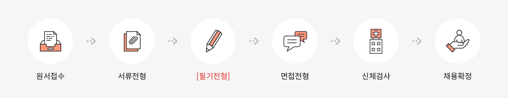
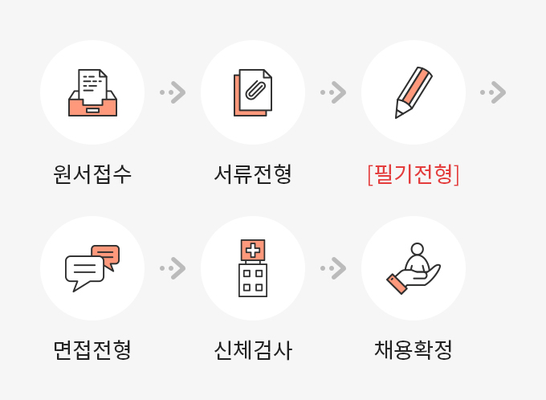

채용안내
본 안내 사항은 지원자분들의 이해를 돕기 위한 일반적인 사항으로 실제 채용공고와는 일부 다른 부분이 있을 수 있습니다.
반드시 지원하시는 채용건의 채용공고문에 기재된 내용을 확인하시어 채용 진행 시 불이익이 없도록 주의해주세요.
반드시 지원하시는 채용건의 채용공고문에 기재된 내용을 확인하시어 채용 진행 시 불이익이 없도록 주의해주세요.
수시공채 – 고졸 사무직(4급), 경력직, 청년인턴 등
※ 아래 사항은 고졸 사무직 기준으로 작성되었으며, 나머지 수시공채는 내부 인력수요에 따라 비정기적으로 실시되는 채용공고문을 확인해주시기 바랍니다.
모집분야
- 고졸 사무직의 경우 공사의 무역보험업무를 간접적으로 지원하는 직종으로 총무업무, 세무업무, 자산관리업무, 무역보험업무 지원 업무 등을 담당하고 있습니다.
- 아래 직무설명자료는 공사 채용을 준비하시는 지원자분들께 도움을 드리기 위해 이전에 시행된 고졸 사무직 공채를 참고하여 작성된 예시입니다.
- 직무설명자료는 조직 및 인력운영 상황에 따라 모집분야는 변경될 수 있으니, 최종적으로는 지원하시는 채용공고에 첨부되어 있는 “직무설명자료”를 참고해주시기 바랍니다.
응시자격
- 공사는 NCS기반 직무능력중심 채용 및 블라인드 채용을 진행하고 있어 입사지원시 사진, 성별, 연령 등 직무와 무관한 요소를 수집하고 있지 않습니다.
- 다만, 사무직의 경우 정부의 고졸채용 장려 정책에 따른 고졸적합직무로 직무유관성이 높은 “상업계특성화고 졸업(예정)자 중 학업성적이 일정 이상이고, 학교장 추천을 받은 자”에 한하여 지원이 가능합니다.
모집시기
- 인력수요에 따라 필요시 채용공고를 통해 비정기적으로 모집하고 있습니다.
채용절차


※ [필기전형]은 통상 「NCS기반 직업기초능력평가」를 시행하고
있습니다. 지원자분들의 이해를 돕기 위한 예시로 최종적으로 지원하시는 채용공고를 확인해주시기 바랍니다.